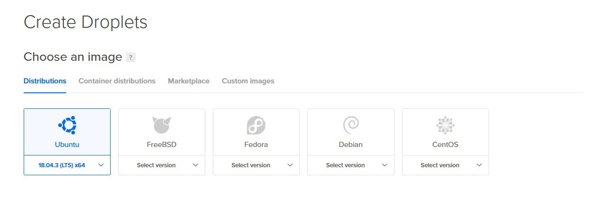

Virtuaalipalvelin ja nimipalvelu
22.02. - 25.02.2020, Kristian KoponenMuokattu ulkoasu, 08.03.2020
Tehtävänanto
Linux-palvelimet h4
Käytetyt laitteet
Lenovo ThinkPad X220
| Prosessori: | Intel(R) Core(TM) i5-2540M @ 2.60Ghz |
|---|---|
| Keskusmuisti: | 4GiB 1333Mhz DDR3 |
| Näytönohjain: | Intel HD Graphics 3000 |
| Käyttöjärjestelmä: | Windows 10 64-bit |
SanDisk Ultra USB 3.0 32 GB
xubuntu 18.04.3 amd64 -liveOma julkisen palvelimen tilaaminen
Haen julkisen palvelun DigitalOcean.com :sta. Ensin kirjaudutaan DigitalOcean.com -palveluun sisälle ja klikataan "New Project". Annetaan projektille nimi, kuvaus ja kerrotaan DigitalOceanille mihin käyttöön tämä tulee.
{kind=link}
Koska minulla on jo DigitalOceanissa yksi projekti, käyttöliittymä kysyy halutaanko siirtää resursseja uuteen projektiin. Ei tällä kertaa, sillä tarkoitus on aloittaa alusta. Skip for now.

Aukeaa projektin etusivu, jossa on eri vaihtoehtoja droplettejen luontiin esim. tietokantamielessä. Klikataan "Get Started with a Droplet". Dropletin luonnissa on erilaisia valintoja.
Ensimmäisenä valitaan käyttöjärjestelmän levykuva. Ubuntu on tutuin, joten valitaan Ubuntu 18.04.3 (LTS) x64.
{kind=link}
Seuraavaksi valitaan virtuaalipalvelimen suorituskyky ja talletustila. Halvin vaihtoehto löytyy Standard-paketista. (1 GB CPU:lla, 25 GB SSD talletustilalla ja 1000 GB siirtonopeudella. 5 dollaria kuukaudessa.)

Ei tarvita lisätilaa, joten jätetään block storage kohta tekemättä.

Palvelimen sijainti valitaan eurooppakeskeisesti Saksasta, joka kuuluu EU-alueeseen.
{kind=link}
Dropletiin voi ottaa lisäpalveluita, kuten yksityinen verkko, IPv6-verkko, käyttäjädata sekä Dropletin seuranta. Ei oteta mitään näistä.

Autentikointi Dropletiin. SSH-avainautentikoinnissa salasanat ovat poissa käytöstä, jolloin Droplet on suojattu brute-force hyökkäyksiä vastaan. Valitaan kuitenkin "One-time password" vaihtoehdon, jolloin DigitalOcean lähettää ennalta määritettyyn sähköpostiosoitteeseen root-käyttäjän salasanan, joka on vaihdettava heti.

Lopuksi voidaan määritellä montako dropletia luodaan, lisätä hakusanoja niiden organisointia varten ja valita projekti mihin droplet liitetään. Luodaan yksi dropletin ja liitetään se aiemmin luotuun harjoitusprojektiin.
{kind=link}
Ei haluta maksaa varmuuskopioinnista, sillä voimme tehdä sen itse. "Create Droplet."

Menee hetki virtuaalipalvelimen luonnissa. Palvelin on luotu ja saamme sen IP-osoitteen. Voidaan nyt ottaa SSH-yhteyden palvelimeen.
Palvelimelle tarvittavat alkutoimet
Aloitetaan avaamalla Linux-päätelaite ja päivittämällä komennolla
$ sudo apt-get update && sudo apt-get upgrade
Asennetaan SSH-demoni komennolla
$ sudo apt-get install ssh -y
Kirjaudutaan palvelimelle SSH-yhteydellä palvelimen IP-osoitteeseen sen root-käyttäjällä. IP-osoitteen saa DigitalOceanin dropletin tiedoista ja root-käyttäjän salasana on lähetetty sähköpostiin.
$ ssh root@10.0.0.1
Tulee ilmoitus että kyseisen IP-osoitteen autentikointi ei onnistu ja annetaan ECDSA tunniste. Vaihtoehtoina jatkaa tai peruuttaa yhteys. Jatketaan kirjoittamalla "yes".
Annetaan DigitalOceanin lähettämä salasana, jolla kirjaudumme root-käyttäjälle. Järjestelmä pyytää vaihtamaan salasanan uuteen. Kun olemme tämän tehneet, olemme sisällä uudella palvelimellamme root-käyttäjänä.
Ensimmäisenä luomme reiän SSH-yhteydelle (oletuksena portti 22) palomuuriin, jotta voimme jatkaa käyttöä sen käynnistämisen jälkeen. Komento
$ sudo ufw allow 22/tcp
Käynnistetään palomuuri komennolla
$ sudo ufw enable
Tulee vielä varoitus, että palomuurin käynnistäminen saattaa häiritä nykyistä SSH-yhteyttä. Jatketaan.
{kind=link}
Luodaan uusi käyttäjä, jotta voimme lukita root-käyttäjän.
$ sudo adduser username
Järjestelmä pyytää asettamaan käyttäjälle salasanan. Käytetään samaa, jota käytimme root-tunnukseen. Seuraavaksi tulee käyttäjälle tietojen asetus. Nimi, huonenumero, puhelinnumero ja muut tiedot. Annetaan käyttäjälle myös pääkäyttäjän, sekä adminin oikeudet.
{kind=link}
Testataan että käyttäjä toimii. Avataan uusi terminaali ja kirjaudutaan käyttäjällä palvelimelle. Yhteys toimii. Katsotaan vielä käyttäjän ryhmät.
$ groups
Kaikki hyvin.
{kind=link}
Nyt lukitaan root-käyttäjä, ettei sitä voida väärinkäyttää. Ensin lukitaan sen salasana.
$ sudo usermod --lock root
Lukitaan root-käyttäjän SSH-kirjautuminen muokkaamalla /etc/ssh/sshd_config -tiedostoa.
$ sudoedit /etc/ssh/sshd_config
...
PermitRootLogin no
...
Käynnistetään SSH uudelleen.
{kind=link}
Päivitetään järjestelmä komennolla
$ sudo apt-get update && sudo apt-get upgrade -y
Palvelimen alkutoimet ovat nyt valmiit.
DNS-nimi
Haen domain-nimen NameCheap.com :sta. Olen jo entuudesta luonut tunnuksen ja tilannut domainin, mutta käyn läpi domainin tilauksen vaiheita. Ensin klikataan Domains-välilehti auki ja syötetään hakukenttään haluttu nimi. NameCheap ehdottaa eri päätteitä ja näyttää vuosihinnan niille. Suosituimmat kuten .com ja .net tulevat päällimäisinä mikäli ne ovat vapaita. Lisätään haluttu nimi ostoskoriin. NameCheap tarjoaa ylimääräisiä palveluita lisähinnasta, mutta siirrytään tilaukseen, jossa pyydetään yhteystietoja ja maksutietoja. NameCheapiltä saa ilmaisen WhoisGuard-yksityisyyssuojan, joka estää yhteystietojen näkymisen Whois-palveluissa. Tilauksen voi myös automaattisesti uusia sen päättymisen lähestyessä.
{kind=link}
Kun nimi on tilattu, mennään omalle Dashboardille ja painetaan "Manage" kyseisen nimen kohdalta. Täällä osoitteen liittäminen on piilotettu Advanced DNS -välilehden taakse. Täytetään Host Records -kohtaan uudet A Recordit. Toiselle Host-kohtaan "@" ja toiselle muodon vuoksi tehty "www". Aliosoitteita voidaan luoda rajattomasti ilmaiseksi. A Record (A-tietue) tarkoittaa sitä, että nimellä voidaan osoittaa IP-osoitteeseen, joten lisätään palvelimen IP-osoitteen Value-kenttään ja hyväksytään.
{kind=link}
Annetaan hetki uudelle nimelle tulla näkyviin, ja sitten testataan päästäänkö nimellä IP-osoitteeseen. Mennään terminaaliin ja otetaan SSH-yhteys IP-osoitteen sijasta DNS-nimeen.
$ ssh username@example.com
Päästiin onnistuneesti kirjautumaan palvelimelle, joten voidaan päätellä, että uusi nimi on nyt käytöstä.

TLS-salakirjoitus
Muokattu 08.03.2020 (Korjaus)
Aloitetaan asentamalla palvelimelle apache2 ja saamalla testisivu näkyviin verkon yli.
$ sudo apt-get install apache2
Tehdään reikä HTTP-pyynnöille palomuuriin komennolla
$ sudo ufw allow 80/tc
Käydään selaimella aiemmin asetetussa osoitteessa katsomassa, että Apachen testisivu näkyy. Näkyy, joten Apache toimii. Voidaan korvata myös testisivun sisältö komennolla
$ echo "Hello world" | sudo tee /var/www/html/index.html
Luodaan VirtualHost domainille kuten harjoitus 3:ssa tehtiin.
TLS-salakirjoitusta varten käytetään Let's Encryptin ilmaista sertifiointia. Let's Encrypt vaatii sertifikaatin uusimisen 90 vuorokauden välein, joten käytetään Certbotia tämän automatisoimiseksi.
Certbotin sivuilta saa palvelimen perusteella suorat ohjeet Certbotin asentamiselle. Seuraavilla komennoilla saadaan Certbot PPA repositoryyn:
$ sudo apt-get update
$ sudo apt-get install software-properties-common
$ sudo add-apt-repository universe
$ sudo add-apt-repository ppa:certbot/certbot
$ sudo apt-get update
Asennetaan Certbot.
$ sudo apt-get install certbot python-certbot-apache
Sitten haetaan sertifikaatti ja asennetaan se Apache-palvelimen konfiguraatioon.
$ sudo certbot --apache
Certbot pyytää sähköpostiosoitetta uusimis- ja turvallisuustiedoituksia varten, lukemaan käyttöehdot ja hyväksymään ne sekä lupaa jakaa sähköpostiosoitteen Electronic Frontier Foundationin muita tiedotteita varten. Certbot käy läpi Apachen konfiguraatio-tiedostot ja kysyy vielä mille nimille HTTPS halutaan aktivoida. Tässä voidaan valita tietyt nimet, tai jättää kohta tyhjäksi jolloin se aktivoidaan kaikille havaituille sivuille. Vielä täytyy valita halutaanko ohjata HTTP-pyynnöt HTTPS:ää, joka poistaa HTTP-pyynnöt käytöstä. Valitaan tähän kyllä.
Saadaan vihdoin ilmoitus, että sertifikaatti on käytössä. Testataan automattista uusimista komennolla
$ sudo certbot renew --dry-run
Komentoriville tulostuu uusimisen kuivaharjoittelua ja onnistumisilmoitus. Voidaan nyt vielä käydä testaamassa, että meillä on HTTPS-yhteys. Nyt selaimella osoitteeseen navigoidessa tulee "Connection timed out". Spekuloin virheen johtuvan portista ja palomuuriasetuksista. Otin HTTP:n pois käytöstä, joten nyt yhteyttä yritetään luoda HTTPS:n kautta ja HTTPS käyttää oletusarvoisesti porttia 443. Luodaan siis reikä palomuuriin portille 443 komennolla
$ sudo ufw allow 443/tcp
Kokeillaan uudelleen ja sivu tulee näkyviin ja yhteys näkyy olevan verifioitu.
{kind=link}
Otetaan lopuksi Apachen oletussivu pois käytöstä komennolla
$ sudo a2dissite 000-default.com.conf
ja vielä sertifioinnin yhteydessä luotu SSL-konfiguraatio oletussivulle
$ sudo a2dissite 000-default.com-le-ssl.conf
Käynnistetään Apache uudestaan komennolla
$ sudo systemctl reload apache2
Murtautumisyrityksien tutkimista
Muokattu 08.03.2020 (Korjaus)
Käydään tutkimassa autentikointi-lokia komennolla
$ tail -n 30 /var/log/auth.log
Löytyy useita eri yrityksiä kirjautua root-käyttäjänä sisään. On tullut autentikointi-virhe väärien salasanojen vuoksi. Todennäköisesti yritetään päästä kirjautumaan sisään sanakirjahyökkäyksellä.

Kirjautumisyrityksessä näkyy IP-osoite, josta yritys on tullut. Katsotaan mistä tämä on lähtöisin.
$ whois (IP-osoite)
Näyttää tulleen kiinalaisen operaattorin hallinoimasta osoitteesta.
{kind=link}
Vaikka root-käyttäjä on palvelimella lukittu, halutaan kuitenkin estää jatkuva SSH-pommitus. Ideana on estää yhteydet useasti epäonnistuneesta kirjautumisyrityksestä.
Asennetaan fail2ban
$ sudo apt-get install fail2ban
Tarkastetaan että fail2ban demonia on käynnissä
$ sudo systemctl status fail2ban
Saadaan konsoliin näkyviin, että fail2ban on aktiivinen ja elinikä. Fail2ban pitää kuitenkin vielä konfiguroida. Vaihdetaan fail2banin hakemistoon
$ cd /etc/fail2ban
Fail2ban lukee ensin .conf tiedostot ja sen jälkeen .local tiedostot, eli muutokset on hyvä tehdä .local tiedostoon. Kopioidaan jail.conf tiedosto.
$ sudo cp jail.conf jail.local
Tässä tiedostossa muutetaan "bantime", "findtime" ja "maxretry" kohtia. Laitetaan eston pituudeksi testimielessä 3 minuuttia. Eli 180 kohdan "bantime" perään. Jätetään "findtime" ja "bantime" vielä oletusarvoihin. Eli jos tulee 5 epäonnistunutta kirjautumisyritystä 10 minuutin sisällä, tulee 3 minuutin esto. Tällä on hyvä testata. Voidaan myöhemmin muuttaa näitä arvoja sopivimmiksi.
# "bantime" is the number of seconds that a host is banned.
bantime = 180
# A host is banned if it has generated "maxretry" during the last "findtime"
# seconds.
findtime = 10m
# "maxretry" is the number of failures before a host get banned.
maxretry = 5
Mennään tiedostossa alaspäin kohtaan "# JAILS". Lisätään kohdan "[sshd]" perään "enable = true" ja muutetaan "port" kohtaan käytetty SSH-portti (oletusarvoisesti 22).
[sshd]
# To use more aggressive sshd modes set filter parameter "mode" in jail.local:
# normal (default), ddos, extra or aggressive (combines all).
# See "tests/files/logs/sshd" or "filter.d/sshd.conf" for usage example and details.
#mode = normal
enable = true
port = 22
logpath = %(sshd_log)s
backend = %(sshd_backend)s
Tallennetaan tiedosto ja käynnistetään Fail2ban uudelleen.
$ sudo systemctl restart fail2ban
Jäädään lukemaan fail2ban lokia komennolla
$ tail -f /var/log/fail2ban.log
Tarkoituksena oli koittaa kirjautua itse väärillä tunnuksilla, mutta botit ehtivätkin ensin ja lokiin tallentui useita yrityksiä. Jokainen osoite estettiin viiden yrityksen jälkeen kolmeksi minuutiksi.

Testasin vielä kuitenkin itse mitä tapahtuu, kun kirjautuu väärillä tunnuksilla, eri IP:stä ettei oma yhteys katkea. Yhteys ei yksinkertaisesti onnistu ollenkaan. Tästä testistä päättelin, että fail2ban toimii. Mennään muokkaamaan "bantime", "findtime" ja "maxretry" kohdat /etc/fail2ban/jail.local -tiedostosta sopiviksi ja jätetään fail2ban hoitamaan tunkeilijat.
Lähteet
http://terokarvinen.com/2020/linux-palvelimet-2020-alkukevat-kurssi-ict4tn021-3010/#h4
http://terokarvinen.com/2017/first-steps-on-a-new-virtual-private-server-an-example-on-digitalocean
https://letsencrypt.org/
https://certbot.eff.org/lets-encrypt/ubuntubionic-apache
https://withblue.ink/2016/07/15/stop-ssh-brute-force-attempts.html
https://www.fail2ban.org/wiki/index.php/Main_Page